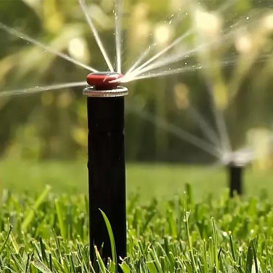
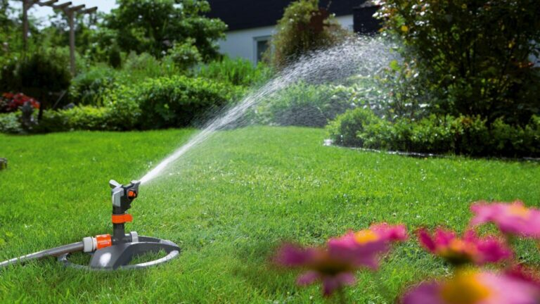

تصميم وتركيب وتمديد شبكات الري للحدائق بالرياض

تصميم وتركيب وتمديد شبكات الري للحدائق الجمال والراحة في مساحاتك الخضراء
تعتبر الحدائق جزءًا أساسيًا من منازلنا ومحيطنا الخارجي. إنها ليست مجرد مساحات خضراء، بل هي أماكن للاسترخاء والتأمل والتواصل مع الطبيعة. تقدم شركة كوكب الزهور خدمة تصميم وتركيب وتمديد شبكات الري للحدائق المنزلية والفلل والقصور في الرياض.
مميزات خدمة تصميم وتركيب وتمديد شبكات الري
-
تصميم مبتكر: يقوم فريق المهندسين لدينا بتصميم شبكات الري بشكل مبتكر يلبي احتياجات العميل ويضمن توزيع متساوٍ للمياه.
-
تركيب دقيق: نقوم بتركيب شبكات الري بدقة واحترافية، مع الاهتمام بتوزيع المواسير والرشاشات بشكل مناسب.
-
تمديد الشبكات: نقوم بتمديد شبكات الري العادية والحديثة، مع الاهتمام بتوفير تغطية مثالية للمساحة المخصصة.
-
صيانة مستمرة: نقدم خدمات الصيانة المنتظمة لشبكات الري، بما في ذلك تنظيف وإصلاح الأجزاء الضرورية.
تصميم الشلالات والنوافير الصناعية بالرياض
-
استشارة وتقييم الموقع: تبدأ عملية التصميم بجلسة استشارية مع فريق شركة كوكب الزهور لفهم رؤية العميل ومتطلباته. يتم تقييم الموقع المراد تصميم الشلال أو النافورة فيه، بما في ذلك الحجم والشكل والمساحة المتاحة والبيئة المحيطة. يتم أيضًا دراسة المصادر المتاحة للماء والتوصل إلى المتطلبات الفنية والمالية للمشروع.
-
استخدام الخامات العالية الجودة: نتعامل مع مصانع متخصصة تنتج الديكورات الحجرية بجودة عالية
وبملمس آمن ومتين. نضمن أن الديكورات الحجرية تحتفظ بجمالها ولونها لفترة طويلة.
-
تركيب دقيق: نقوم بتركيب الديكورات الحجرية بدقة واحترافية. نهتم بالتفاصيل ونضمن توزيع متساوٍ
وتثبيت صحيح
-
تنسيق مع البيئة الخضراء: نحن نأخذ في اعتبارنا الحدائق والمساحات الخضراء المحيطة عند تصميم
وتركيب الديكورات الحجرية. نسعى لتحقيق التكامل بين العناصر والطبيعة.

خدمات صيانة وإصلاح النوافير التي تقدمها الشركة؟
تعتبر الديكورات الحجرية من أقدم وأجمل العناصر المستخدمة في التصميم الداخلي والخارجي، وهي تضفي
على المكان طابعًا يجمع بين الصلابة والجمال. شركة “كوكب الزهور” تقدم لعملائها تصاميم ديكورات
حجرية تناسب مختلف الأذواق والمساحات، مع الحفاظ على الجودة والدقة في التنفيذ.
الجدران الحجرية: قوة التحمل والجمال
تتميز الجدران الحجرية بقوتها ومقاومتها للعوامل الطبيعية، وتعطي شعورًا بالدفء والأصالة. في “كوكب
الزهور”، نستخدم أحجارًا طبيعية وصناعية عالية الجودة لخلق جدران حجرية تتماشى مع الطراز المعماري
للمبنى وتلبي رغبات العملاء.
الأرضيات الحجرية لا تقدم فقط متانة عالية، بل تضيف أيضًا لمسة من الفخامة والرقي. “كوكب الزهور”
توفر مجموعة متنوعة من الأحجار مثل الرخام والجرانيت والحجر الجيري، والتي يمكن تشكيلها بأشكال
وأنماط مختلفة لتناسب كل مساحة.
لماذا تختار كوكب الزهور؟
-
خبرة واحترافية: نحن متخصصون في تنسيق الحدائق وتصميم الديكورات الحجرية منذ سنوات.
-
أسعار مناسبة: نقدم أسعارًا تنافسية مع الحفاظ على جودة الخدمة.
-
تصميم مخصص: نفهم أن كل حديقة فريدة، ولذلك نقدم تصميمًا مخصصًا يلبي احتياجات العميل.
فلنجعل حدائقك تتألق بجمالها وتكون مكانًا مثاليًا للاستمتاع بالهواء الطلق والطبيعة. اتصل بنا